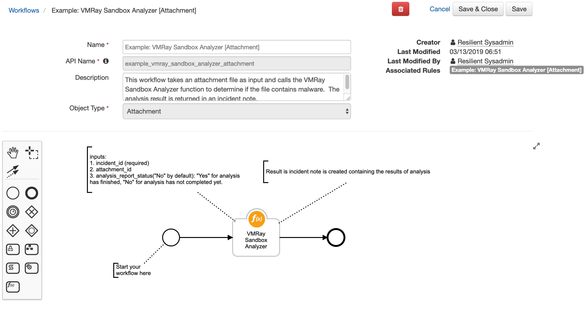
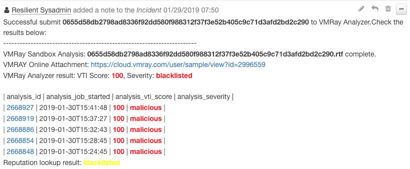
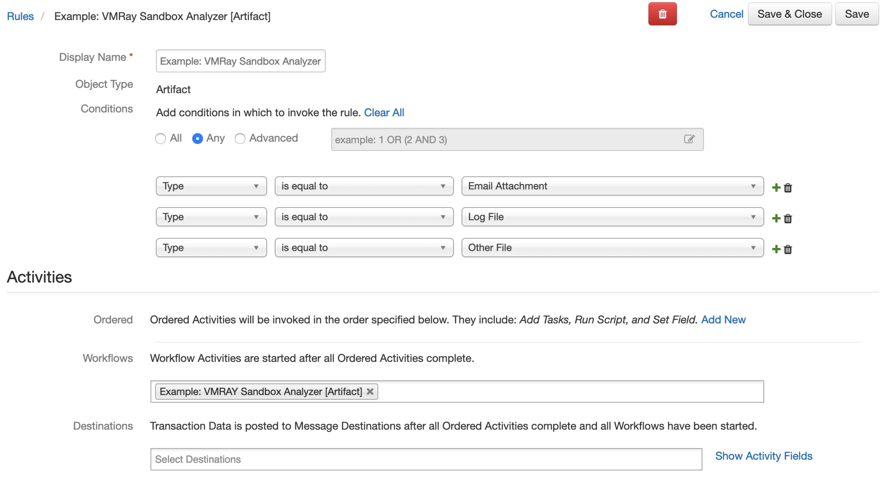
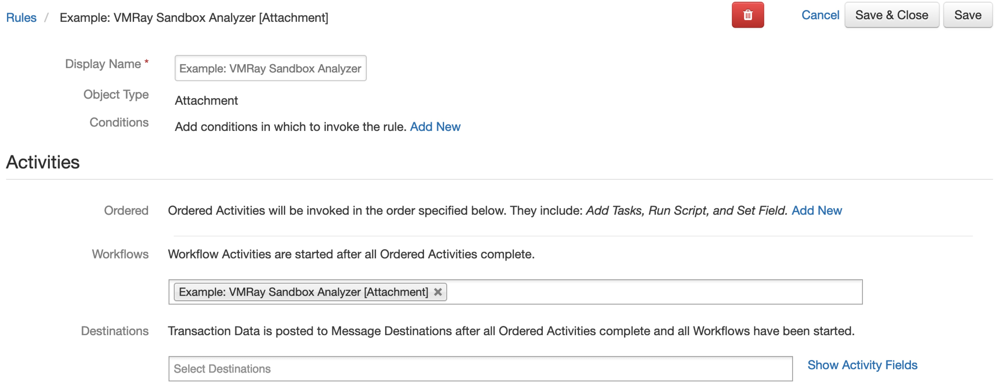

VMRay Sandbox Analyzer Function for IBM Resilient#
Table of Contents#
Release Notes#
v1.0.1#
App Host support
v1.0.0#
Initial Release
Overview#
This package contains a function that executes a VMRay Malware Sandbox Analysis using VMRay Cloud API. Also included are two example workflows and two example rules that demonstrate how to use this function.

The attachment or artifact to be analyzed must be a file.
The report only supports JSON format. HTML and PDF are not supported.
Supports a proxy. Add your proxy details to the [integrations] section of the
app.configfile.
Requirements#
Resilient platform >=
v35.0.0An Integration Server running
resilient_circuits>=30.0.0To set up an Integration Server see: ibm.biz/res-int-server-guide
Installation#
App Format#
The app .zip file is in a container format and requires a Resilient platform configured with an App Host.
The app tar.gz file is an extension format and requires a Resilient platform configured with an integration server.
App Host#
For a complete guide on how to configure App Host and install apps in the Resilient platform, please reference the Resilient Apps topic in the Knowledge Center. Knowledge Center.
All the components for running this integration in a container already exist when using the App Host app.
To install,
Navigate to Administrative Settings and then the Apps tab.
Click the Install button and select the downloaded file: app-fn_vmray_analyzer-x.x.x.zip.
Go to the Configuration tab and edit the app.config file, editing the vmray_api_key and making any additional setting changes.
Config |
Required |
Example |
Description |
|---|---|---|---|
vmray_api_key |
Yes |
`` |
VMRay Analyzer API Key |
vmray_analyzer_url |
Yes |
|
VMRay Server URL |
vmray_analyzer_report_request_timeout |
Yes |
|
Amount of time in seconds to wait until checking if the report is ready |
Integration Server#
Download the
app-fn_vmray_analyzer-x.x.x.zipfile.Copy the
.zipto your Integration Server and SSH into it.Unzip the package:
$ unzip app-fn_vmray_analyzer-x.x.x.zip
Install the package:
$ pip install fn_vmray_analyzer-x.x.x.tar.gz
Import the configurations into your app.config file:
$ resilient-circuits config -u -l fn-vmray-analyzer
Import the fn_vmray_analyzer customizations into the Resilient platform:
$ resilient-circuits customize -y -l fn-vmray-analyzer
Open the config file, scroll to the bottom and edit your fn_vmray_analyzer configurations:
$ nano ~/.resilient/app.config
Download the
fn_vmray_analyzer.zip.Copy the
.zipto your Integration Server and SSH into it.Unzip the package:
$ unzip fn_vmray_analyzer-x.x.x.zip
Change Directory into the unzipped directory:
$ cd fn_vmray_analyzer-x.x.x
Install the package:
$ pip install fn_vmray_analyzer-x.x.x.tar.gz
Import the configurations into your app.config file:
$ resilient-circuits config -u -l fn-vmray-analyzer
Import the fn_vmray_analyzer customizations into the Resilient platform:
$ resilient-circuits customize -y -l fn-vmray-analyzer
Open the config file, scroll to the bottom and edit your fn_vmray_analyzer configurations:
$ nano ~/.resilient/app.config
Config
Required
Example
Description
vmray_api_key
Yes
``
VMRay Analyzer API Key
vmray_analyzer_url
Yes
https://cloud.vmray.comVMRay Server URL
vmray_analyzer_report_request_timeout
Yes
60Amount of time in seconds to wait until checking if the report is ready
Save and Close the app.config file.
[Optional]: Run selftest to test the Integration you configured:
$ resilient-circuits selftest -l fn-vmray-analyzer
Run resilient-circuits or restart the Service on Windows/Linux:
$ resilient-circuits run
Uninstall
If using an integration server, you can uninstall your app as follows:
SSH into your Integration Server.
Uninstall the package:
$ pip uninstall fn-vmray-analyzer
Open the config file, scroll to the [fn_vmray_analyzer] section and remove the section or prefix
#to comment out the section.Save and Close the app.config file.
Function Inputs:#
Function Name |
Type |
Required |
Example |
Info |
|---|---|---|---|---|
|
|
Yes |
|
The ID of the current Incident |
|
|
No |
|
The ID of the Attachment to be analyzed |
|
|
No |
|
The ID of the Artifact to be analyzed |
|
|
Yes |
|
Has the analysis report generated successfully. Options are: |
Function Output:#
results = {
"analysis_report_status": analysis_report_status,
"incident_id": incident_id,
"artifact_id": artifact_id,
"attachment_id": attachment_id,
"sample_final_result": sample_final_result
}
Pre-Process Script:#
Example: VMRAY Sandbox Analyzer [Attachment]
inputs.incident_id = incident.id
inputs.attachment_id = attatchment.id
Example: VMRAY Sandbox Analyzer [Artifact]
inputs.incident_id = incident.id
inputs.artifact_id = artifact.id
Post-Process Script:#
This example adds a Note to the Incident and color codes the analysis_status depending if it was malicious or clean
def font_color(vti_score,sample_severity):
color = "green"
try:
if sample_severity in ["malicious"] or int(vti_score) >= 75:
color = "red"
elif sample_severity in ["blacklisted","suspicious"] or int(vti_score) >= 50:
color = "yellow"
except:
pass
return color
if not results.analysis_report_status:
noteText = u"""Successful submit <b>{}</b> to VMRay Cloud Analyzer.However it will take time to generate an analysis report, please submit it again later. <br>""".format(attachment.name)
else:
noteText = u"""Successful submit <b>{}</b> to VMRay Analyzer.Check the results below: <br>""".format(attachment.name)
for sample in results.sample_final_result:
noteText += u"""-----------------------------------------------------------------------"""
color = font_color(sample["sample_report"]["sample_score"],sample["sample_report"]["sample_last_reputation_severity"])
noteText += u"""<br>VMRay Sandbox Analysis: <b>{sample_filename}</b> complete.<br>
VMRAY Online Attachment: <a href={sample_online_report}>{sample_online_report}</a><br>
VMRay Analyzer result: VTI Score: <b style= "color:{color}">{sample_vti_score}</b>, Severity: <b style= "color:{color}">{sample_severity}</b> <br>
""".format(sample_filename=sample["sample_report"]["sample_filename"],
sample_online_report=sample["sample_report"]["sample_webif_url"],
color = color,
sample_vti_score = sample["sample_report"]["sample_score"],
sample_severity = sample["sample_report"]["sample_last_reputation_severity"])
noteText += u"""<br>| analysis_id | analysis_job_started | analysis_vti_score | analysis_severity |<br>"""
for analysis in sample["sample_analysis_report"]:
color = font_color(analysis["analysis_vti_score"],analysis["analysis_severity"])
noteText += u"""| <a href={analysis_link}> {analysis_id} </a> | {analysis_job_started} | <b style= "color:{color}"> {analysis_vti_score}</b> | <b style= "color:{color}">{analysis_severity}</b> |<br>
""".format(analysis_link=analysis["analysis_webif_url"],
analysis_id=analysis["analysis_id"],
analysis_job_started=analysis["analysis_job_started"],
analysis_vti_score=analysis["analysis_vti_score"],
analysis_severity=analysis["analysis_severity"],
color=color)
reputations = [str(reputation["reputation_lookup_severity"]) for reputation in sample["sample_reputation_report"]]
if "malicious" in reputations:
color = "red"
reputation_lookup_severity = "malicious"
elif "suspicious" in reputations:
color = "yellow"
reputation_lookup_severity = "suspicious"
elif "blacklisted" in reputations:
color = "yellow"
reputation_lookup_severity = "blacklisted"
elif "not_suspicious" in reputations:
color = "green"
reputation_lookup_severity = "not_suspicious"
elif "whitelisted" in reputations:
color = "green"
reputation_lookup_severity = "whitelisted"
else:
color = "green"
reputation_lookup_severity = "unknown"
noteText += u"""Reputation lookup result: <b style= "color:{color}">{reputation_lookup_severity} </b> <br>""".format(color=color, reputation_lookup_severity=reputation_lookup_severity)
incident.addNote(helper.createRichText(noteText))
Example of adding a incident note from post-processing scripts:
#
Rules#
Rule Name |
Object Type |
Workflow Triggered |
|---|---|---|
Example: VMRay Sandbox Analysis [Artifact] |
|
|

Rule Name |
Object Type |
Workflow Triggered |
|---|---|---|
Example: VMRay Sandbox Analyzer [Attachment] |
|
|
